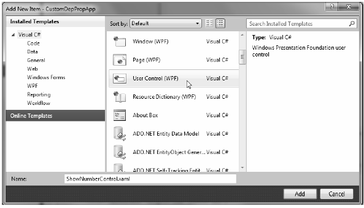
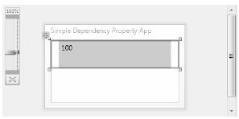
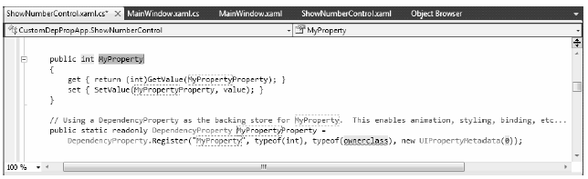
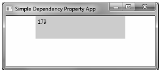

If you have a slight headache at this point in the chapter, this is a perfectly normal response. Building dependency properties can take some time to get used to. However, for better or worse, it is part of the process of building many custom WPF controls, so let’s take a look at how to build a dependency property.
Begin by creating a new WPF Application named CustomDepPropApp. Now, using the Project menu, activate the Add menu option, and create a control named ShowNumberControl.xaml (Figure 31-1).
Figure 31-1 Inserting a new custom
Note You will learn more details about the WPF later in this chapter, so just following along as shown for now.
Just like a window, WPF types have a XAML file and a related code file. Update the XAML of your user control to define a single Label control in the Grid:
<UserControl x:Class="CustomDepPropApp.ShowNumberControl" xmlns="http://schemas.microsoft.com/winfx/2006/xaml/presentation" xmlns:x="http://schemas.microsoft.com/winfx/2006/xaml" xmlns:mc="http://schemas.openxmlformats.org/markup-compatibility/2006" xmlns:d="http://schemas.microsoft.com/expression/blend/2008" mc:Ignorable="d" d:DesignHeight="300" d:DesignWidth="300"> <Grid> <Label x:Name="numberDisplay" Height="50" Width="200" Background="LightBlue"/> </Grid> </UserControl>
In the code file of this custom control, create a normal, everyday .NET property which wraps an int and sets the Content property of the Label with the new value:
public partial class ShowNumberControl : UserControl { public ShowNumberControl() { InitializeComponent(); } // A normal, everyday .NET property private int currNumber = 0; public int CurrentNumber { get { return currNumber; } set { currNumber = value; numberDisplay.Content = CurrentNumber.ToString(); } } }
Now, update the XAML definition of your window to declare an instance of your custom control within a StackPanel layout manger. Because your custom control is not part of the core WPF assembly stack, you will need to define a custom XML namespace which maps to your control (see Chapter 27). Here is the required markup:
<Window x:Class="CustomDepPropApp.MainWindow" xmlns="http://schemas.microsoft.com/winfx/2006/xaml/presentation" xmlns:x="http://schemas.microsoft.com/winfx/2006/xaml" xmlns:myCtrls="clr-namespace:CustomDepPropApp" Title="Simple Dependency Property App" Height="150" Width="250" WindowStartupLocation="CenterScreen"> <StackPanel> <myCtrls:ShowNumberControl x:Name="myShowNumberCtrl" CurrentNumber="100"/> </StackPanel> </Window>
As you can see, the Visual Studio 2010 designer appears to correctly display the value that you set in the CurrentNumber property (Figure 31-2).
Figure 31-2 It appears your property works as expected...
However, what if you want to apply an animation object to the CurrentNumber property so that the value changes from 100 to 200 over the period of 10 seconds? If you wanted to do so in markup, you might update your <myCtrls:ShowNumberControl> scope as so:
<myCtrls:ShowNumberControl x:Name="myShowNumberCtrl" CurrentNumber="100"> <myCtrls:ShowNumberControl.Triggers> <EventTrigger RoutedEvent = "myCtrls:ShowNumberControl.Loaded"> <EventTrigger.Actions> <BeginStoryboard> <Storyboard TargetProperty = "CurrentNumber"> <Int32Animation From = "100" To = "200" Duration = "0:0:10"/> </Storyboard> </BeginStoryboard> </EventTrigger.Actions> </EventTrigger> </myCtrls:ShowNumberControl.Triggers> </myCtrls:ShowNumberControl>
If you attempt to run your application, the animation object cannot find a proper target, so it is ignored. The reason is that the CurrentNumber property has not been registered as a dependency property! To fix matters, return to the code file of your custom control, and completely comment out the current property logic (including the private backing field). Now, position your mouse cursor within the scope of the class and type in the propdp code snippet (Figure 31-3).
Figure 31-3 The propdp code snippet provides a starting point for building a dependency property
After you have typed propdp, press the Tab key twice. You will find the snippet expands to give you the basic skeleton of a dependency property (Figure 31-4).
Figure 31-4 The expanded snippet
The simplest version of the CurrentNumber property will look like so:
public partial class ShowNumberControl : UserControl { public int CurrentNumber { get { return (int)GetValue(CurrentNumberProperty); } set { SetValue(CurrentNumberProperty, value); } } public static readonly DependencyProperty CurrentNumberProperty = DependencyProperty.Register("CurrentNumber", typeof(int), typeof(ShowNumberControl), new UIPropertyMetadata(0)); ... }
This is similar to what you saw in the implementation of the Height property; however, the code snippet registers the property inline rather than within a static constructor (which is fine). Also notice that a UIPropertyMetadata object is used to define the default value of the integer (0) rather than the more complex FrameworkPropertyMetadata object.
Although you now have a dependency property named CurrentNumber, you still won’t see your animation take hold. The next adjustment you might want to make is to specify a function to call to perform some data validation logic. For this example, assume that you need to ensure that the value of CurrentNumber is between 0 and 500.
To do so, add a final argument to the DependencyProperty.Register() method of type ValidateValueCallback, which points to a method named ValidateCurrentNumber.
ValidateValueCallback is a delegate that can only point to methods returning bool and take an object as the only argument. This object represents the new value that is being assigned. Implement ValidateCurrentNumber to return true or false, if the incoming value is within the expected range:
public static readonly DependencyProperty CurrentNumberProperty = DependencyProperty.Register("CurrentNumber", typeof(int), typeof(ShowNumberControl), new UIPropertyMetadata(100), new ValidateValueCallback(ValidateCurrentNumber)); public static bool ValidateCurrentNumber(object value) { // Just a simple business rule. Value must be between 0 and 500. if (Convert.ToInt32(value) >= 0 && Convert.ToInt32(value) <= 500) return true; else return false; }
OK, so now you have a valid number, but still no animation. The final change you need to make is to specify a second argument to the constructor of UIPropertyMetadata, which is a PropertyChangedCallback object. This delegate can point to any method that takes a DependencyObject as the first parameter and a DependencyPropertyChangedEventArgs as the second. First, update your code as so:
// Note the second param of UIPropertyMetadata construtor. public static readonly DependencyProperty CurrentNumberProperty = DependencyProperty.Register("CurrentNumber", typeof(int), typeof(ShowNumberControl), new UIPropertyMetadata(100, new PropertyChangedCallback(CurrentNumberChanged)), new ValidateValueCallback(ValidateCurrentNumber));
Within the CurrentNumberChanged() method, your ultimate goal is to change the Content of the Label to the new value assigned by the CurrentNumber property. You have one big problem, however: the CurrentNumberChanged() method is static, as it must be to work with the static DependencyProperty object. So how are you supposed to gain access to the Label for the current instance of ShowNumberControl? That reference is contained in the first DependencyObject parameter. You can find the new value using the incoming event arguments. Here is the necessary code which will change the Content property of the Label:
private static void CurrentNumberChanged(DependencyObject depObj, DependencyPropertyChangedEventArgs args) { // Cast the DependencyObject into ShowNumberControl ShowNumberControl c = (ShowNumberControl)depObj; // Get the Label control in the ShowNumberControl. Label theLabel = c.numberDisplay; // Set the label with the new value. theLabel.Content = args.NewValue.ToString(); }
Whew! That was a long way to go just to change the output of a label. The benefit is that your CurrentNumber dependency property can now be the target of a WPF style, an animation object, the target of a data binding operation, and so forth. Figure 31-5 shows your completed application (and yes, it really is changing the value while running).
Figure 31-5 Animation at last!
That wraps up your look at WPF dependency properties. While I hope you have a much better idea about what these constructs allow you to do and have a better idea of how to make your own, please be aware that there are many details I have not covered here.
If you find yourself in a position where you are building a number of custom controls which support custom properties, please look up the topic "Properties" under the "WPF Fundamentals" node of the .NET Framework 4.0 SDK documentation. Here, you will find many more examples of building dependency properties, attached properties, various ways to configure property metadata, and a slew of other details.